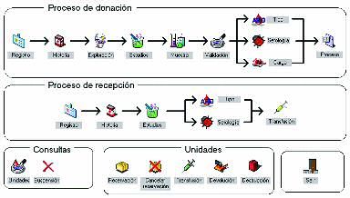
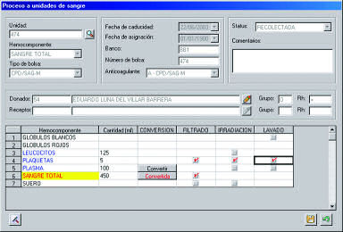

xBlood - Sistema para el manejo de bancos de sangre
xBlood es un sistema para el apoyo operacional y el control administrativo integral de un banco de sangre o centro transfusional.
Controla el manejo de donadores, receptores, así como los procesos y movimientos efectuados a las unidades de sangre. Permite un acceso controlado a las diversas funciones del banco de sangre llevando de la mano al usuario a través de las diferentes etapas de la donación por medio de un flujo de trabajo (workflow) así como de los procesos de transfusión, validación, cesión, reservación y destrucción de las unidades.
Realiza el envío automático de solicitudes de estudios al laboratorio: biometría hemática, grupo y Rh, estudios de serología, anticuerpos irregulares así como de pruebas cruzadas. En caso de que el banco de sangre realice sus propios estudios localmente, hace posible la transcripción de resultados en forma manual o por medio de interfaces con equipos automatizados.
Imprime etiquetas con código de barras tanto para los tubos de muestras del donador como para la bolsa de la unidad de sangre (CODE 128).
Incluye un control de inventarios para el manejo de los suministros utilizados dentro del servicio.
Así mismo se incluye un módulo completo de control de calidad interno con gráficas de Levy-Jennings.
Para efectos de control cuenta con una bitácora de todas las transacciones realizadas dentro del banco de sangre: donaciones, suspensión temporal o definitiva de donadores, carga y descarga de unidades, proceso y movimiento de unidades, destrucción de unidades, con la identificación de la transacción, fecha y hora así como el usuario y máquina donde se realizó la transacción.
Permite la emisión de reportes de control y estadísticos tanto para el control interno del banco de sangre como de todos los reportes solicitados por entidades externas (SSA, CNTS).
El sistema xBlood tiene la capacidad de conectarse a un sistema hospitalario de forma automática o por medio de interfaces para accesar o actualizar la información de pacientes, el expediente clínico así como información administrativa de facturación y cobranza.
Características Generales
- Aprovecha todas las ventajas de una aplicación diseñada y desarrollada para Windows: interfaz de usuario gráfica y amigable, capacidad de compartir la información con otras aplicaciones de Windows como Word, Excel o Access entre otras.
- Permite la utilización de prácticamente cualquier base de datos para el almacenamiento de la información de pacientes y resultados.
- Disponible en versión monousuario o multiusuario (red).
El sistema para bancos de sangre xBlood representa una nueva generación de sistemas de información donde se han integrado la experiencia de numerosos profesionales de la salud así como expertos en tecnología de información para obtener un sistema que es flexible y fácil de utilizar, económico y fácilmente expandible.

Registro de pre-donadores
- Actualiza los datos demográficos del pre-donador y tipo de donación
- Consulta de fechas de la primera y última donación así como suspensión temporal o definitiva
- Conexión automática con el sistema hospitalario para accesar la información de pacientes
Historia Clínica
- Permite configurar en forma fácil y flexible las preguntas que conforman la historia clínica
- Configurable para que pueda rechazarse al pre-donador automáticamente
Exploración Física
- Actualiza los datos de la exploración física como peso, temperatura, pulso, presión sistólica y diastólica así como el resultado general de la exploración
- Puede rechazarse al pre-donador en forma automática especificando la causa de rechazo
Solicitud de estudios
- Asignación automática de número de toma, fecha, centro de toma y hemoteca
- Registro automático de exámenes de laboratorio dependiendo del tipo de donación: autóloga, homóloga, donación directa o donación por aféresis
- Impresión de etiquetas con código de barras y forma de autoexclusión
- Fácil configuración de pruebas de laboratorio por tipo de donación
Toma de sangre
- Brazo en que se tomó, la dificultad de extracción y tolerancia del pre-donador a la toma de sangre
- Permite detectar donadores difíciles o rechazar al pre-donador
Validación de resultados
- Revisión de resultados de hemoglobina y hematocrito para decidir si el pre-donador es apto
- Validación automática de acuerdo a las reglas preestablecidas
Grupo ABO y Rh
- Captura del grupo sanguíneo y Rh así como en su caso el fenotipo de la unidad
- Puede configurarse para transferir automáticamente los datos de grupo ABO y Rh desde el laboratorio
- Permite revisar los resultados de los estudios serológicos realizados a la unidad
- Los estudios a realizar son configurables y dependen del tipo de donación
- Los resultados pueden transferirse directamente del equipo autoanalizador por medio de interfaces
- Permite configurar una validación manual o automática
Carga de Unidad
- El sistema registra el número de unidad, la cantidad donada, los hemocomponentes, fecha de toma, centro de toma, hemoteca, grupo y Rh, tipo de bolsa, anticoagulante y calcula automáticamente la fecha de caducidad
- Permite observar el histórico de donaciones realizadas hasta la fecha
- En caso de no poder completar la donación puede rechazarse el proceso especificando la causa de rechazo
Proceso a las unidades
- Manejo de los diferentes procesos que pueden realizarse a cada hemocomponente: fraccionamiento, filtración, lavado, pool, irradiación, etc.
- Registro de la fecha del proceso, el usuario que lo llevó a cabo así como la fecha de caducidad del hemocomponente
- Pueden configurarse nuevos componentes, la cantidad default que se maneja, la fecha de caducidad, el tipo de bolsa y anticoagulante, así como los procesos permitidos a cada componente

Reservación de unidades
- Permite la reservación de unidades para su posterior transfusión al receptor
- Despliega las unidades disponibles de acuerdo al hemocomponente, grupo y Rh seleccionados
- Muestra las unidades previamente reservadas al mismo receptor
- Es posible cancelar una reservación para liberar la unidad
Descarga de unidades
- Permite la descarga de unidad o proceso de transfusión después de validar las pruebas cruzadas y anticuerpos irregulares en su caso
- La asignación puede realizarse de las unidades disponibles o de las unidades reservadas específicamente a ese receptor
Devolución de unidades
- Actualiza el motivo, fecha y hora de la devolución y comentarios
Reportes
- Resumen diario por número de unidad, tipo de visita, tipo de evento, centro de toma, etc.
- Listado y carta de convocación a donadores por fecha, grupo y Rh, fenotipo, nombre, etc.
- Estadística de cargos, descargos y procesos
- Bitácora del sistema
- Estadísticas sanitarias apegadas a los requerimientos del CNTS
Almacén
- Control del inventario de reactivos y suministros
- Ordenes de compra manuales y automáticas
- Recepción de artículos
- Despacho hacia áreas de servicio o sucursales
- Control de fechas de vencimiento y lotes
- Manejo de múltiples almacenes
- Inventarios físicos
Control de calidad
- Aseguramiento de la calidad de los resultados
- Presentación de alarmas para resultados fuera de control
- Registro de reactivos de control
- Registro de valores teóricos de media y desviación estándar
- Método y unidades de medida
- Configuración de intervalos de aceptabilidad o reglas de Westgard
- Generación de gráficas de Levy-Jennings
Obtenga esta página en formato PDF:
Si requiere más información por favor utilice alguna de nuestras formas de contacto
Vea también:
- xHosp - Sistema integral para la administración hospitalaria
- xLab - Sistema para el control y operación de laboratorios clínicos
- xRay - Sistema para el control y operación de gabinetes de rayos X e imagenología